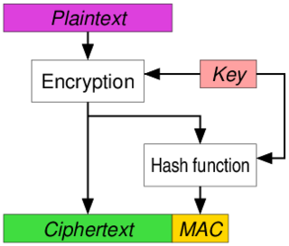
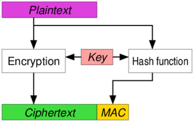
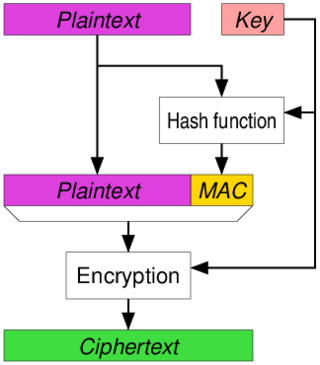

俺一直在等 TLS 1.3 定稿（之所以这么期待，因为 1.3 是一次【大】升级）。
前些天（2018年8月），IETF 终于发布了 RFC 8446，标志着 TLS 1.3 协议大功告成。于是俺就来继续完成本系列的后面几篇。
本系列的前一篇，咱们聊了“密钥交换/密钥协商”的相关算法。从这篇开始，会逐步谈及协议的细节，今天就从 Record 协议说起。由于恰逢 TLS 1.3 新鲜出炉，俺也顺便聊聊 SSL/TLS 历史上几个版本的演变及差异。
对于本文会涉及到的几个专业术语，先放上相应的解释。
“块加密算法”又称“分组加密算法”，洋文叫做“Block Cipher”，相关的维基百科链接在“这里”。
顾名思义，就是这类加密算法要求：被加密的明文数据必须分成【相同大小】的若干坨（每一坨的大小称为【块长度】）。
以目前流行的对称加密算法 AES 为例。AES 的【块长度】是“128 比特”（16字节）。也就是说，AES 要求被加密的明文必须是【128位】的整数倍。
由于【块加密算法】对明文的长度有要求，所以用这类算法对明文数据进行加密之前，要先进行【补齐】——在明文数据末尾追加一些垃圾数据，使之达到【块长度】的整数倍。
与“块加密算法”相对应的是“流加密算法”，洋文叫做“Stream Cipher”，相关的维基百科页面在“这里”。
与“块加密算法”最大的差别在于——流加密算法对明文数据的长度【没有】要求（可以是任意字节数）。
典型的流加密算法是 RC4（顺便提一句：RC4 里面的 R 也就是 RSA 的那个 R）
MAC 是洋文“Message Authentication Code”的缩写，维基百科的介绍在“这里”。这玩意儿是通讯及密码学的常见的概念——用 MAC 算法来确保某个信息在传输的过程中【没有】被篡改。
说到这儿，某些聪明的同学已经联想到【散列函数】——用散列函数计算出来的哈希值确实可以用来作为 MAC。这种基于哈希（HASH）的“消息验证代码”也称作“HMAC”。不了解哈希算法的同学可以看这篇博文：《扫盲文件完整性校验——关于散列值和数字签名》
常见的有如下3种。俺从维基百科剽窃了对应的流程图，大伙儿看图就明白其原理，省得俺浪费力气打字了。
Encrypt-then-MAC（EtM）

（先加密明文得到密文，再根据密文计算 MAC，最后把密文与 MAC 合并成一坨）
Encrypt-and-MAC（E＆M）

（对明文加密得到密文，对明文计算 MAC，最后把密文与 MAC 合并成一坨）
MAC-then-Encrypt（MtE）

（对明文计算 MAC，把明文与 MAC 合并成一坨，然后一起加密）
传统的加密算法只负责实现【保密性】，而不负责【完整性】。这么说有点抽象，俺举个例子：
假设你把一段明文 P 加密为一段密文 C，通过网络把 C 发送给另一个人。中途如果被攻击者篡改了（把 C 修改为 C'），那么接收方收到 C' 之后，还是可以正常进行解密操作（当然，解密之后得到的就不再是 P 了，而是得到一段无意义的数据）
为了解决上述弊端，业界引入 AE（Authenticated Encryption）算法的概念。也就是说，AE 算法不但能做到【保密性】还可以做到【完整性】。
刚才扫盲的三种 MAC 实现方式，【从理论上讲】就可以算 AE 啦。但上述那三种 MAC 的实现方式有个弊端——【解密】的一方还要自己进行 MAC 的验证操作。这种搞法既麻烦又增加额外风险。比如说：写解密代码的程序猿/程序媛万一太粗心忘记进行验证，岂不前功尽弃？
为了避免上述提到的弊端，密码学界那帮专家又捣鼓出一些新的算法（比如 CCM、GCM）。这些算法可以在解密的同时验证数据的有效性，而且这些算法也【不】需要再额外存储一个独立的 MAC 数据。
本文后续部分提及的 AE，如果没有特别说明，就是指这类【真正的】AE。
知名的那些 AE 算法，可以组合现有的加密算法。比如说：从 TLS 1.2 开始引入的 GCM 和 CCM，这两个 AE 算法都可以组合 AES128 与 AES256 加密算法。
组合现有加密算法的好处不光是避免重新发明轮子，而且还可以充分利用硬件加速。比如 AES 作为对称加密的标准算法，某些芯片（比如 Intel/AMD）会把 AES 算法直接做成 CPU 指令，以实现硬件加速。
AEAD 是洋文“Authenticated Encryption with Associated Data”的缩写，普通话叫做“带关联数据的认证加密”。简而言之，AEAD 是 AE 的变种。为了方便理解，俺再来找个栗子：
比如说在网络通讯中，数据包的【头部】必须是明文且保证完整性；而数据包的【载荷】既要加密（保密性）又要保证完整性。这时候 AEAD 算法就派上用场啦——数据包的【头部】就是 AEAD 算法里面的【关联数据】。
在本系列的前一篇《密钥交换（密钥协商）算法及其原理》，俺已经补充了一个章节，简单扫盲了一下“回溯性破解”与“前向保密”的概念。
所以这里就不再浪费口水啦。
趁着 TLS 1.3 正式发布的大好时机，简单扫盲一下 SSL/TLS 各个版本的差异。
在本系列的第一篇，俺曾经提到：SSL 是上世纪90年代中期，由网景公司设计的。早期设计者是网景公司的 Taher Elgamal（一位埃及的密码学家）。此人也被誉为“SSL 它爹”。
SSL 1.0 【从没】正式发布过，所以业界对它了解不多。之所以没有正式发布，据说是设计完之后发现了若干严重的安全缺陷，就不好意思再拿出来丢人现眼。
SSL 2.0 是 1995 年正式发布滴，坦率地说，协议设计比较粗糙。
比如俺在前一篇介绍过“密钥交换算法”和“身份认证算法”。在这两方面，SSL 2.0 都仅仅支持 RSA 这一种算法。
另一个值得吐槽之处是：SSL 2.0【没有】考虑到“前向保密”（洋文是“forward secrecy”），因此会遭遇【回溯性破解】的风险。（关于“前向保密”与“回溯性破解”，请看本文开头的名词解释）
SSL 2.0 发布之后不久，又被发现若干安全漏洞。所以又赶紧在 1996 年发布了 SSL 3.0 版本。（接连两个版本都不太灵光，看来“SSL 它爹”的水平实在令人不敢恭维）
这个 3.0 版本可以说是另起炉灶——换了几个密码学专家，【重新设计】了 SSL 协议。所以 SSL 3.0 相比 SSL 2.0 有很大差别。
关于 SSL 3.0 的权威技术规范，可以参见 RFC 6101
请允许俺稍微跑题一下：
重新设计 SSL 3.0 的那些专家，为首的是来自斯坦福大学的 Paul Kocher——此人堪称密码学奇才，SSL 3.0 发布的那年（1996），他才23岁（回想俺23岁的时候，在密码学方面是只菜鸟，真是情何以堪）。
在同一年，他还发表了篇论文，描述了一种【全新的】密码学攻击方式——timing attack（基于时间因素的边信道攻击）。这种攻击手法的原理，说起来并不算复杂，但很有创意，之前从来没人想到过。
TLS 1.0 是 1999 年发布滴，技术规范参见 RFC 2246。
为啥从 SSL 改名为 TLS 捏？主要是安全性在 Web 世界中越来越重要，因此 IETF 组织急需把 SSL 的协议【标准化】，为了以示区别，另外起个名字叫 TLS（洋文“Transport Layer Security”的缩写）。
虽然协议名改了，但其实 TLS 1.0 与 SSL 3.0 的差别不大。这点从协议版本号也可以看出来——TLS 1.0 内部的协议版本号其实是【3.1】。
TLS 1.1 是 2006 年发布滴，技术规范是 RFC 4346。
发布该版本的主要动机是：修补 CBC（cipher-block chaining）相关的漏洞，以防范某些攻击（比如“padding oracle attack”）。
在 1.1 版本，原有的“【隐式】初始化向量”改为“【显式】初始化向量”，修正了 CBC 方式下填充数据的缺陷。
TLS 1.2 是 2008 年发布滴，技术规范是 RFC 5246。
相比 TLS 1.1 的变化如下：
俺写本文时，TLS 1.3 刚刚新鲜出炉没几天（2018年8月），其技术规范是 RFC 8446。
从2008到2018，真所谓“十年磨一剑”。目前看来，这个 1.3 版本是一次雄心勃勃的升级，相对 TLS 1.2 加了不少东西，也删了不少东西。考虑到篇幅，俺挑几个主要的来说说：
很多介绍 SSL/TLS 的文章都把 record 协议给忽略了。可能这些文章的作者觉得 record 协议不太重要。但俺本着“高度负责任”的心态，觉得还是有必要跟大伙儿聊一下。
SSL/TLS 协议在通讯的过程中会把需要传输的数据分成一坨一坨的，每次都只发送或接收一坨。在洋文中，每一坨称作一个 record。下面要聊的“Record 协议”，就是用来定义这个 record 的格式。
Record 协议比较简单，主要结构见下表：
“类型”字段是个枚举值，协议允许的有效值参见下表（对表格中的每种类型，后续小节会有详细介绍）
“版本”字段含两个字节，分别表示：主版本号 ＆ 次版本号。其有效值如下：
（注：从 TLS 1.3 版本开始，“版本”字段已经被废弃，仅用于向后兼容）
“长度”字段含两个字节，表示载荷长度。
对于【明文】的 record，【没有】“消息认证码”字段，也【没有】“填充”字段——“载荷长度”也就是消息的长度。
对于【加密】的 record——“载荷长度”是“消息、消息验证码、填充”三者的长度之和。
SSL/TLS 协议规定了长度字段最多只能表示
每个 record 的“消息”字段的内容取决于“类型”字段。关于这个“消息”字段，待会儿再聊。
关于 MAC 这个概念，参见本文开头部分的名词解释，此处不再浪费口水。
在 SSL/TLS 协议中，MAC 对于明文的 record 没有意义（为啥没意义，请自行思考）。
对于【加密】的 record，要分两种情况：
其一，如果是【传统的】块加密与流加密，会带有额外的 MAC；
其二，如果使用 AEAD 加密模式，其本身已经内置了【完整性】的校验，不需额外的 MAC。
前面提到，AEAD 是从 TLS 1.2 开始引入，到了 TLS 1.3 就【只支持】AEAD 啦。所以 TLS 1.3 【没有】MAC 部分。
SSL/TLS 各个版本实现【完整性】的方式，参见如下表格：
只有当 record 是加密的，并且使用的加密算法属于【块加密算法】，才会使用“填充”字段。
从 Record 协议的头部类型字段可以看出，总共有5种类型的 Record。下面简单说一下：
Record 协议的“类型”字段为
“握手”的意思就是——通讯双方初次打交道，需要交换一些初始化的信息。
对于 SSL/TLS 协议，为了建立起【可靠的】加密信道，通讯双方需要在握手的过程交换很多信息（加密算法、压缩算法、MAC 算法、等等）。所以这个握手的过程是比较复杂滴，需要耗费很多口水。俺留到本系列的下一篇，专门来聊“握手的细节”。
由于握手的过程，加密信道尚未建立，所以用来进行握手的 record 是【明文】滴，并且也【没有】“MAC”字段及“填充”字段。
Record 协议的“类型”字段为
这个 ChangeCipherSpec 也是跟握手过程相关滴，留到下一篇。
（注：从 TLS 1.3 版本开始，ChangeCipherSpec 类型的 record 已经被废弃，仅用于向后兼容）
Record 协议的“类型”字段为
也就是说，这条 record 的载荷部分存放的是上层（应用层）协议的数据。既然传输的是上层数据，肯定得是【加密】滴！但不一定有“MAC”字段。要看具体的 SSL/TLS 版本（如下）：
1. 对于 TLS 1.1 及之前的版本，总是使用 HMAC 进行完整性校验，所以总是含有“MAC”字段。
2. 对于 TLS 1.2，如果握手之后采用 AEAD 加密模式，就没有 MAC；反之，则有 MAC。
3. 对于 TLS 1.3 及之后的版本，只支持 AEAD，【不】再有“MAC”字段。
另外，在 TLS 1.2 及【之前】的版本中，还支持“对应用层数据进行压缩”。本来俺还想聊聊这方面的实现细节。但是 TLS 1.3 已经【废弃】了压缩选项（为了防 CRIME 攻击），恐怕未来版本也不会再有压缩选项了。搞得俺也没积极性来聊这个话题了 :(
Record 协议的“类型”字段为
这种类型的 record 用来发送警告或出错信息。
在通讯的过程（包括握手过程）中，有时候某一方会发现不对劲（比如收到的数据出现缺失或错误），这时候就要发送一条 Alert 类型的 record 给对方。
不对劲的情况分为两种，洋文分别称之为 Warning 和 Fatal。两者的差别在于：
这种类型的 record，其“消息”字段仅有2字节，头一个字节表示告警的“级别/Level”（1表示 warning，2表示 fatal）；后一个字节表示具体的描述（有一个对照表，用不同的整数表示不同的情况）。
如果在握手【之后】发送告警，此时双方已经建立起加密信道，则告警 record 的“消息”字段是【密文】的。
如果在握手【之前】发送告警，此书尚未建立加密信道，则告警 record 的“消息”字段是【明文】的。
Record 协议的“类型”字段为
这种类型的 record 用来发送心跳信息。
所谓的【心跳】，主要用来确认“通讯的对端”依然正常。在 SSL/TLS 连接建立之后，有可能在某些情况下出现【通讯空闲】（上层的协议在某个时间段没有数据传输）。这时候就需要依靠【心跳机制】来判断对方是否还活着。
由于“心跳”的传输是在加密信道建立【之后】，所以“心跳”的 record 也是加密滴。
关于这个心跳机制的技术细节，请参见 RFC6520（链接在“这里”）。
这个心跳协议的 RFC 发布于2012年（晚于2008年的 TLS 1.2），因此目前只有 TLS 1.3 版本才支持它。
回到本系列的目录
前些天（2018年8月），IETF 终于发布了 RFC 8446，标志着 TLS 1.3 协议大功告成。于是俺就来继续完成本系列的后面几篇。
本系列的前一篇，咱们聊了“密钥交换/密钥协商”的相关算法。从这篇开始，会逐步谈及协议的细节，今天就从 Record 协议说起。由于恰逢 TLS 1.3 新鲜出炉，俺也顺便聊聊 SSL/TLS 历史上几个版本的演变及差异。
★名词解释
对于本文会涉及到的几个专业术语，先放上相应的解释。
◇块加密算法
“块加密算法”又称“分组加密算法”，洋文叫做“Block Cipher”，相关的维基百科链接在“这里”。
顾名思义，就是这类加密算法要求：被加密的明文数据必须分成【相同大小】的若干坨（每一坨的大小称为【块长度】）。
以目前流行的对称加密算法 AES 为例。AES 的【块长度】是“128 比特”（16字节）。也就是说，AES 要求被加密的明文必须是【128位】的整数倍。
由于【块加密算法】对明文的长度有要求，所以用这类算法对明文数据进行加密之前，要先进行【补齐】——在明文数据末尾追加一些垃圾数据，使之达到【块长度】的整数倍。
◇流加密算法
与“块加密算法”相对应的是“流加密算法”，洋文叫做“Stream Cipher”，相关的维基百科页面在“这里”。
与“块加密算法”最大的差别在于——流加密算法对明文数据的长度【没有】要求（可以是任意字节数）。
典型的流加密算法是 RC4（顺便提一句：RC4 里面的 R 也就是 RSA 的那个 R）
◇MAC（消息认证码）
MAC 是洋文“Message Authentication Code”的缩写，维基百科的介绍在“这里”。这玩意儿是通讯及密码学的常见的概念——用 MAC 算法来确保某个信息在传输的过程中【没有】被篡改。
说到这儿，某些聪明的同学已经联想到【散列函数】——用散列函数计算出来的哈希值确实可以用来作为 MAC。这种基于哈希（HASH）的“消息验证代码”也称作“HMAC”。不了解哈希算法的同学可以看这篇博文：《扫盲文件完整性校验——关于散列值和数字签名》
◇MAC 的几种搞法
常见的有如下3种。俺从维基百科剽窃了对应的流程图，大伙儿看图就明白其原理，省得俺浪费力气打字了。
Encrypt-then-MAC（EtM）
（先加密明文得到密文，再根据密文计算 MAC，最后把密文与 MAC 合并成一坨）
Encrypt-and-MAC（E＆M）
（对明文加密得到密文，对明文计算 MAC，最后把密文与 MAC 合并成一坨）
MAC-then-Encrypt（MtE）
（对明文计算 MAC，把明文与 MAC 合并成一坨，然后一起加密）
◇AE（带认证的加密）
传统的加密算法只负责实现【保密性】，而不负责【完整性】。这么说有点抽象，俺举个例子：
假设你把一段明文 P 加密为一段密文 C，通过网络把 C 发送给另一个人。中途如果被攻击者篡改了（把 C 修改为 C'），那么接收方收到 C' 之后，还是可以正常进行解密操作（当然，解密之后得到的就不再是 P 了，而是得到一段无意义的数据）
为了解决上述弊端，业界引入 AE（Authenticated Encryption）算法的概念。也就是说，AE 算法不但能做到【保密性】还可以做到【完整性】。
刚才扫盲的三种 MAC 实现方式，【从理论上讲】就可以算 AE 啦。但上述那三种 MAC 的实现方式有个弊端——【解密】的一方还要自己进行 MAC 的验证操作。这种搞法既麻烦又增加额外风险。比如说：写解密代码的程序猿/程序媛万一太粗心忘记进行验证，岂不前功尽弃？
◇【真正的】AE
为了避免上述提到的弊端，密码学界那帮专家又捣鼓出一些新的算法（比如 CCM、GCM）。这些算法可以在解密的同时验证数据的有效性，而且这些算法也【不】需要再额外存储一个独立的 MAC 数据。
本文后续部分提及的 AE，如果没有特别说明，就是指这类【真正的】AE。
知名的那些 AE 算法，可以组合现有的加密算法。比如说：从 TLS 1.2 开始引入的 GCM 和 CCM，这两个 AE 算法都可以组合 AES128 与 AES256 加密算法。
组合现有加密算法的好处不光是避免重新发明轮子，而且还可以充分利用硬件加速。比如 AES 作为对称加密的标准算法，某些芯片（比如 Intel/AMD）会把 AES 算法直接做成 CPU 指令，以实现硬件加速。
◇AEAD
AEAD 是洋文“Authenticated Encryption with Associated Data”的缩写，普通话叫做“带关联数据的认证加密”。简而言之，AEAD 是 AE 的变种。为了方便理解，俺再来找个栗子：
比如说在网络通讯中，数据包的【头部】必须是明文且保证完整性；而数据包的【载荷】既要加密（保密性）又要保证完整性。这时候 AEAD 算法就派上用场啦——数据包的【头部】就是 AEAD 算法里面的【关联数据】。
◇前向保密 / 完美正向加密（forward secrecy）
在本系列的前一篇《密钥交换（密钥协商）算法及其原理》，俺已经补充了一个章节，简单扫盲了一下“回溯性破解”与“前向保密”的概念。
所以这里就不再浪费口水啦。
★SSL/TLS 历史版本的演变及差异
趁着 TLS 1.3 正式发布的大好时机，简单扫盲一下 SSL/TLS 各个版本的差异。
◇SSL 1.0
在本系列的第一篇，俺曾经提到：SSL 是上世纪90年代中期，由网景公司设计的。早期设计者是网景公司的 Taher Elgamal（一位埃及的密码学家）。此人也被誉为“SSL 它爹”。
SSL 1.0 【从没】正式发布过，所以业界对它了解不多。之所以没有正式发布，据说是设计完之后发现了若干严重的安全缺陷，就不好意思再拿出来丢人现眼。
◇SSL 2.0
SSL 2.0 是 1995 年正式发布滴，坦率地说，协议设计比较粗糙。
比如俺在前一篇介绍过“密钥交换算法”和“身份认证算法”。在这两方面，SSL 2.0 都仅仅支持 RSA 这一种算法。
另一个值得吐槽之处是：SSL 2.0【没有】考虑到“前向保密”（洋文是“forward secrecy”），因此会遭遇【回溯性破解】的风险。（关于“前向保密”与“回溯性破解”，请看本文开头的名词解释）
◇SSL 3.0
SSL 2.0 发布之后不久，又被发现若干安全漏洞。所以又赶紧在 1996 年发布了 SSL 3.0 版本。（接连两个版本都不太灵光，看来“SSL 它爹”的水平实在令人不敢恭维）
这个 3.0 版本可以说是另起炉灶——换了几个密码学专家，【重新设计】了 SSL 协议。所以 SSL 3.0 相比 SSL 2.0 有很大差别。
关于 SSL 3.0 的权威技术规范，可以参见 RFC 6101
请允许俺稍微跑题一下：
重新设计 SSL 3.0 的那些专家，为首的是来自斯坦福大学的 Paul Kocher——此人堪称密码学奇才，SSL 3.0 发布的那年（1996），他才23岁（回想俺23岁的时候，在密码学方面是只菜鸟，真是情何以堪）。
在同一年，他还发表了篇论文，描述了一种【全新的】密码学攻击方式——timing attack（基于时间因素的边信道攻击）。这种攻击手法的原理，说起来并不算复杂，但很有创意，之前从来没人想到过。
◇TLS 1.0
TLS 1.0 是 1999 年发布滴，技术规范参见 RFC 2246。
为啥从 SSL 改名为 TLS 捏？主要是安全性在 Web 世界中越来越重要，因此 IETF 组织急需把 SSL 的协议【标准化】，为了以示区别，另外起个名字叫 TLS（洋文“Transport Layer Security”的缩写）。
虽然协议名改了，但其实 TLS 1.0 与 SSL 3.0 的差别不大。这点从协议版本号也可以看出来——TLS 1.0 内部的协议版本号其实是【3.1】。
◇TLS 1.1
TLS 1.1 是 2006 年发布滴，技术规范是 RFC 4346。
发布该版本的主要动机是：修补 CBC（cipher-block chaining）相关的漏洞，以防范某些攻击（比如“padding oracle attack”）。
在 1.1 版本，原有的“【隐式】初始化向量”改为“【显式】初始化向量”，修正了 CBC 方式下填充数据的缺陷。
◇TLS 1.2
TLS 1.2 是 2008 年发布滴，技术规范是 RFC 5246。
相比 TLS 1.1 的变化如下：
支持 AEAD 加密模式（参见 RFC 5116）
加密算法废弃了 DES、DES40、IDEA、RC2
HMAC 增加了 SHA256
◇TLS 1.3
俺写本文时，TLS 1.3 刚刚新鲜出炉没几天（2018年8月），其技术规范是 RFC 8446。
从2008到2018，真所谓“十年磨一剑”。目前看来，这个 1.3 版本是一次雄心勃勃的升级，相对 TLS 1.2 加了不少东西，也删了不少东西。考虑到篇幅，俺挑几个主要的来说说：
首先要表扬的是：TLS 1.3 完善了 SNI（Server Name Identification）扩展，非常有利于翻墙工具借助【依附的自由】对抗网络封锁；
其次是强制使用“完美正向加密（PFS）”，所以很多做不到 PFS 的密钥协商算法在 TLS 1.3 规范中被无情地抛弃了（比如：RSA、静态 DH、静态 ECDH...）；
传统的 HMAC 也被无情地抛弃了，今后只使用 AEAD 方式来保障完整性（关于 AEAD，请看本文开头的名词解释）；
原有的对称加密算法只保留 AES（3DES、RC4 废弃），另增加 CHACHA20 流加密算法；
压缩特性被废除（以消除 CRIME 攻击的风险）；
初始握手的过程有【很大】的改变（这个等下一篇再聊）
......
★Record 协议概述
很多介绍 SSL/TLS 的文章都把 record 协议给忽略了。可能这些文章的作者觉得 record 协议不太重要。但俺本着“高度负责任”的心态，觉得还是有必要跟大伙儿聊一下。
SSL/TLS 协议在通讯的过程中会把需要传输的数据分成一坨一坨的，每次都只发送或接收一坨。在洋文中，每一坨称作一个 record。下面要聊的“Record 协议”，就是用来定义这个 record 的格式。
★Record 协议的结构
Record 协议比较简单，主要结构见下表：
| 字段名称 | 字段长度 | 备注 |
|---|---|---|
| 类型 | 1字节 | |
| 版本 | 2字节 | TLS 1.3 废弃，仅留作向下兼容 |
| 载荷长度 | 2字节 | |
| 消息 | 0~N 字节 | |
| 消息认证码 | 0~N 字节 | TLS 1.3 不需要该字段 |
| 填充 | 0~N 字节 |
◇类型（type）
“类型”字段是个枚举值，协议允许的有效值参见下表（对表格中的每种类型，后续小节会有详细介绍）
| 十六进制 | 十进制 | 含义 | 备注 |
|---|---|---|---|
| 0x14 | 20 | ChangeCipherSpec（切换到加密方式） | TLS 1.3 废弃 |
| 0x15 | 21 | Alert（告警） | |
| 0x16 | 22 | Handshake（握手） | |
| 0x17 | 23 | Application（应用层数据） | |
| 0x18 | 24 | Heartbeat（心跳） | 始于 TLS 1.3 |
◇版本（version）
“版本”字段含两个字节，分别表示：主版本号 ＆ 次版本号。其有效值如下：
| 主版本号 | 次版本号 | 含义 |
|---|---|---|
| 0x2 | 0x0 | SSL 2.0 |
| 0x3 | 0x0 | SSL 3.0 |
| 0x3 | 0x1 | TLS 1.0 |
| 0x3 | 0x2 | TLS 1.1 |
| 0x3 | 0x3 | TLS 1.2 |
◇长度（length）
“长度”字段含两个字节，表示载荷长度。
对于【明文】的 record，【没有】“消息认证码”字段，也【没有】“填充”字段——“载荷长度”也就是消息的长度。
对于【加密】的 record——“载荷长度”是“消息、消息验证码、填充”三者的长度之和。
SSL/TLS 协议规定了长度字段最多只能表示
0~16384 字节（注：214 = 16384）。◇消息（message）
每个 record 的“消息”字段的内容取决于“类型”字段。关于这个“消息”字段，待会儿再聊。
◇消息认证码（MAC）
关于 MAC 这个概念，参见本文开头部分的名词解释，此处不再浪费口水。
在 SSL/TLS 协议中，MAC 对于明文的 record 没有意义（为啥没意义，请自行思考）。
对于【加密】的 record，要分两种情况：
其一，如果是【传统的】块加密与流加密，会带有额外的 MAC；
其二，如果使用 AEAD 加密模式，其本身已经内置了【完整性】的校验，不需额外的 MAC。
前面提到，AEAD 是从 TLS 1.2 开始引入，到了 TLS 1.3 就【只支持】AEAD 啦。所以 TLS 1.3 【没有】MAC 部分。
SSL/TLS 各个版本实现【完整性】的方式，参见如下表格：
| 算法 | SSL 2.0 | SSL 3.0 | TLS 1.0 | TLS 1.1 | TLS 1.2 | TLS 1.3 |
|---|---|---|---|---|---|---|
| HMAC-MD5 | 是 | 是 | 是 | 是 | 是 | 否 |
| HMAC-SHA1 | 否 | 是 | 是 | 是 | 是 | 否 |
| HMAC-SHA256 | 否 | 否 | 否 | 否 | 是 | 否 |
| AEAD | 否 | 否 | 否 | 否 | 是 | 是 |
◇填充（padding）
只有当 record 是加密的，并且使用的加密算法属于【块加密算法】，才会使用“填充”字段。
★各种类型 Record 简介
从 Record 协议的头部类型字段可以看出，总共有5种类型的 Record。下面简单说一下：
◇握手（Handshake）
Record 协议的“类型”字段为
22（0x16），表示这条 record 是 Handshake 类型。“握手”的意思就是——通讯双方初次打交道，需要交换一些初始化的信息。
对于 SSL/TLS 协议，为了建立起【可靠的】加密信道，通讯双方需要在握手的过程交换很多信息（加密算法、压缩算法、MAC 算法、等等）。所以这个握手的过程是比较复杂滴，需要耗费很多口水。俺留到本系列的下一篇，专门来聊“握手的细节”。
由于握手的过程，加密信道尚未建立，所以用来进行握手的 record 是【明文】滴，并且也【没有】“MAC”字段及“填充”字段。
◇切换到加密方式（ChangeCipherSpec）
Record 协议的“类型”字段为
20（0x14），表示这条 record 是 ChangeCipherSpec 类型。这个 ChangeCipherSpec 也是跟握手过程相关滴，留到下一篇。
（注：从 TLS 1.3 版本开始，ChangeCipherSpec 类型的 record 已经被废弃，仅用于向后兼容）
◇应用层数据（Application）
Record 协议的“类型”字段为
23（0x17），表示这条 record 是 Application 类型。也就是说，这条 record 的载荷部分存放的是上层（应用层）协议的数据。既然传输的是上层数据，肯定得是【加密】滴！但不一定有“MAC”字段。要看具体的 SSL/TLS 版本（如下）：
1. 对于 TLS 1.1 及之前的版本，总是使用 HMAC 进行完整性校验，所以总是含有“MAC”字段。
2. 对于 TLS 1.2，如果握手之后采用 AEAD 加密模式，就没有 MAC；反之，则有 MAC。
3. 对于 TLS 1.3 及之后的版本，只支持 AEAD，【不】再有“MAC”字段。
另外，在 TLS 1.2 及【之前】的版本中，还支持“对应用层数据进行压缩”。本来俺还想聊聊这方面的实现细节。但是 TLS 1.3 已经【废弃】了压缩选项（为了防 CRIME 攻击），恐怕未来版本也不会再有压缩选项了。搞得俺也没积极性来聊这个话题了 :(
◇告警（Alert）
Record 协议的“类型”字段为
21（0x15），表示这条 record 是 Alert 类型。这种类型的 record 用来发送警告或出错信息。
在通讯的过程（包括握手过程）中，有时候某一方会发现不对劲（比如收到的数据出现缺失或错误），这时候就要发送一条 Alert 类型的 record 给对方。
不对劲的情况分为两种，洋文分别称之为 Warning 和 Fatal。两者的差别在于：
Warning 表示通讯出现【不稳定】的情况（这种“不稳定”通常是【可恢复】滴）如果不对劲的情况属于 Warning，通讯可能会继续也可能会断开；如果不对劲的情况属于 Fatal，通讯会在发送 Alert 之后立即断开。
Fatal 表示通讯出现【不可靠】的情况（比如：证书失效、数据被篡改。这种“不可靠”通常是【不可恢复】滴）
这种类型的 record，其“消息”字段仅有2字节，头一个字节表示告警的“级别/Level”（1表示 warning，2表示 fatal）；后一个字节表示具体的描述（有一个对照表，用不同的整数表示不同的情况）。
如果在握手【之后】发送告警，此时双方已经建立起加密信道，则告警 record 的“消息”字段是【密文】的。
如果在握手【之前】发送告警，此书尚未建立加密信道，则告警 record 的“消息”字段是【明文】的。
◇心跳（Heartbeat）
Record 协议的“类型”字段为
24（0x18），表示这条 record 是 Heartbeat 类型。这种类型的 record 用来发送心跳信息。
所谓的【心跳】，主要用来确认“通讯的对端”依然正常。在 SSL/TLS 连接建立之后，有可能在某些情况下出现【通讯空闲】（上层的协议在某个时间段没有数据传输）。这时候就需要依靠【心跳机制】来判断对方是否还活着。
由于“心跳”的传输是在加密信道建立【之后】，所以“心跳”的 record 也是加密滴。
关于这个心跳机制的技术细节，请参见 RFC6520（链接在“这里”）。
这个心跳协议的 RFC 发布于2012年（晚于2008年的 TLS 1.2），因此目前只有 TLS 1.3 版本才支持它。
回到本系列的目录
版权声明
本博客所有的原创文章，作者皆保留版权。转载必须包含本声明，保持本文完整，并以超链接形式注明作者编程随想和本文原始地址：
https://program-think.blogspot.com/2018/09/https-ssl-tls-4.html
本博客所有的原创文章，作者皆保留版权。转载必须包含本声明，保持本文完整，并以超链接形式注明作者编程随想和本文原始地址：
https://program-think.blogspot.com/2018/09/https-ssl-tls-4.html